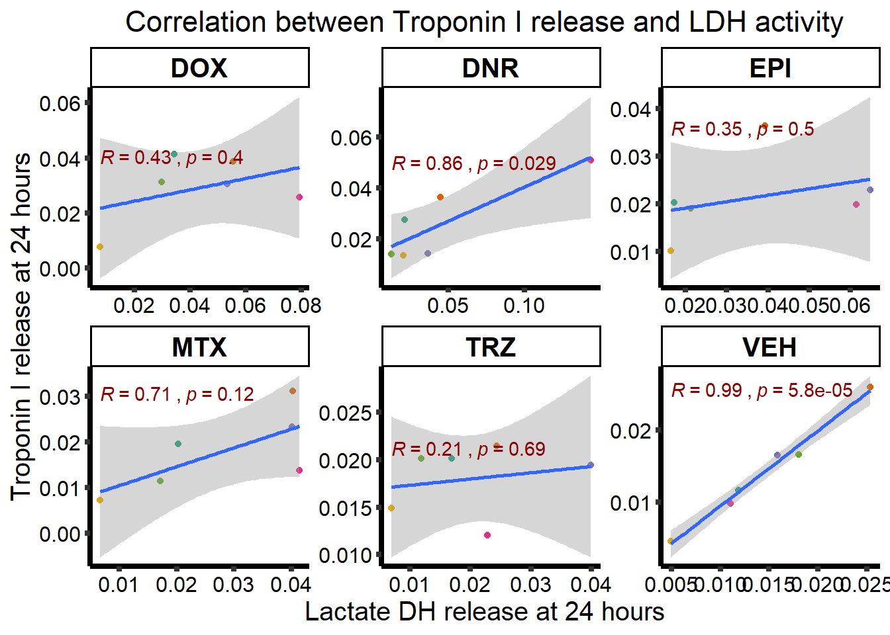
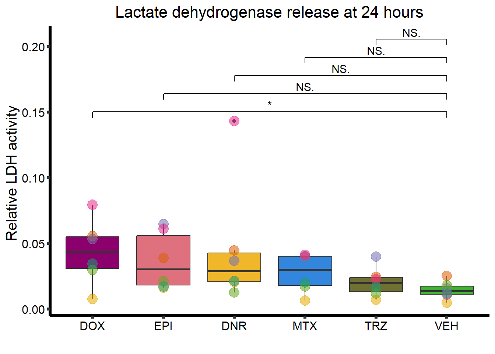
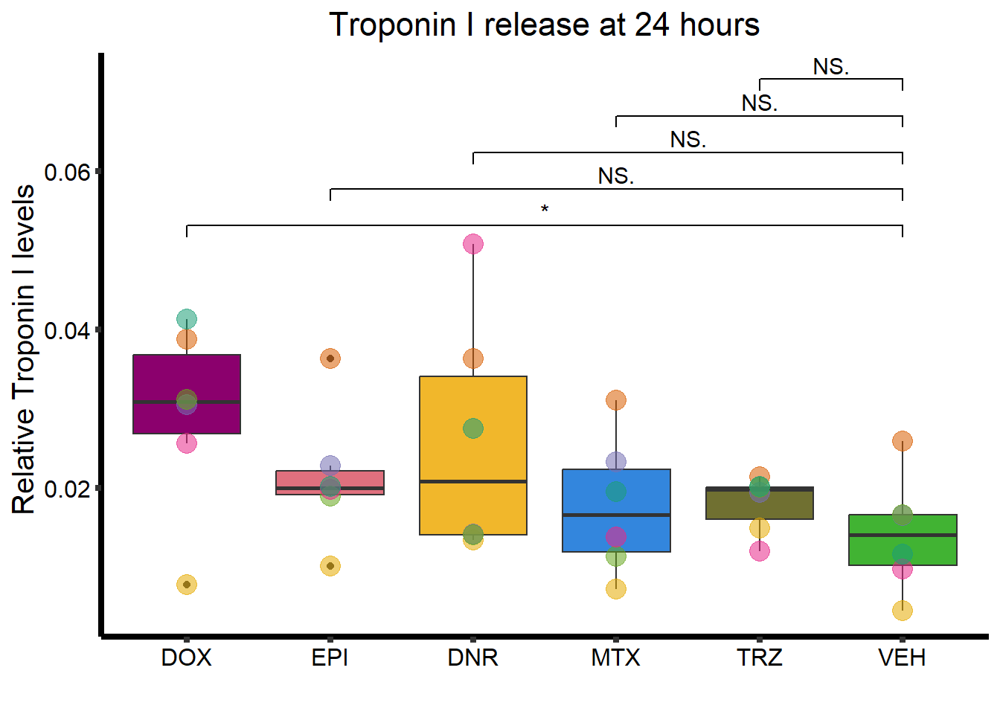
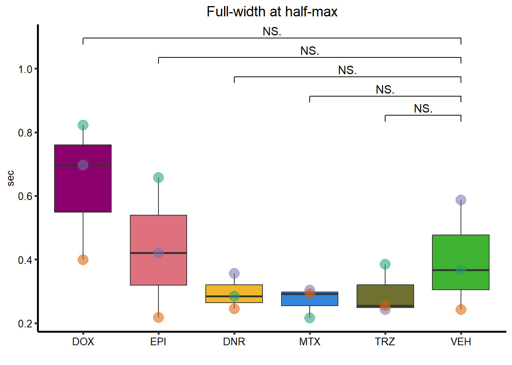

LDH_analysis
ERM
2023-07-03
Last updated: 2023-07-03
Checks: 7 0
Knit directory: Cardiotoxicity/
This reproducible R Markdown analysis was created with workflowr (version 1.7.0). The Checks tab describes the reproducibility checks that were applied when the results were created. The Past versions tab lists the development history.
Great! Since the R Markdown file has been committed to the Git repository, you know the exact version of the code that produced these results.
Great job! The global environment was empty. Objects defined in the global environment can affect the analysis in your R Markdown file in unknown ways. For reproduciblity it’s best to always run the code in an empty environment.
The command set.seed(20230109) was run prior to running
the code in the R Markdown file. Setting a seed ensures that any results
that rely on randomness, e.g. subsampling or permutations, are
reproducible.
Great job! Recording the operating system, R version, and package versions is critical for reproducibility.
Nice! There were no cached chunks for this analysis, so you can be confident that you successfully produced the results during this run.
Great job! Using relative paths to the files within your workflowr project makes it easier to run your code on other machines.
Great! You are using Git for version control. Tracking code development and connecting the code version to the results is critical for reproducibility.
The results in this page were generated with repository version 86f80fa. See the Past versions tab to see a history of the changes made to the R Markdown and HTML files.
Note that you need to be careful to ensure that all relevant files for
the analysis have been committed to Git prior to generating the results
(you can use wflow_publish or
wflow_git_commit). workflowr only checks the R Markdown
file, but you know if there are other scripts or data files that it
depends on. Below is the status of the Git repository when the results
were generated:
Ignored files:
Ignored: .RData
Ignored: .Rhistory
Ignored: .Rproj.user/
Ignored: analysis/figure/
Ignored: data/41588_2018_171_MOESM3_ESMeQTL_ST2_for paper.csv
Ignored: data/Arr_GWAS.txt
Ignored: data/Arr_geneset.RDS
Ignored: data/BC_cell_lines.csv
Ignored: data/CADGWASgene_table.csv
Ignored: data/CAD_geneset.RDS
Ignored: data/CALIMA_Data/
Ignored: data/Clamp_Summary.csv
Ignored: data/Cormotif_24_k1-5_raw.RDS
Ignored: data/DAgostres24.RDS
Ignored: data/DAtable1.csv
Ignored: data/DDEMresp_list.csv
Ignored: data/DDE_reQTL.txt
Ignored: data/DDEresp_list.csv
Ignored: data/DEG-GO/
Ignored: data/DEG_cormotif.RDS
Ignored: data/DF_Plate_Peak.csv
Ignored: data/DRC48hoursdata.csv
Ignored: data/Da24counts.txt
Ignored: data/Dx24counts.txt
Ignored: data/Dx_reQTL_specific.txt
Ignored: data/Ep24counts.txt
Ignored: data/GOIsig.csv
Ignored: data/GOplots.R
Ignored: data/GTEX_setsimple.csv
Ignored: data/GTEX_sig24.RDS
Ignored: data/GTEx_gene_list.csv
Ignored: data/HFGWASgene_table.csv
Ignored: data/HF_geneset.RDS
Ignored: data/Heart_Left_Ventricle.v8.egenes.txt
Ignored: data/Hf_GWAS.txt
Ignored: data/K_cluster
Ignored: data/K_cluster_kisthree.csv
Ignored: data/K_cluster_kistwo.csv
Ignored: data/LD50_05via.csv
Ignored: data/LDH48hoursdata.csv
Ignored: data/Mt24counts.txt
Ignored: data/NoRespDEG_final.csv
Ignored: data/RINsamplelist.txt
Ignored: data/Seonane2019supp1.txt
Ignored: data/TMMnormed_x.RDS
Ignored: data/TOP2Bi-24hoursGO_analysis.csv
Ignored: data/TR24counts.txt
Ignored: data/Top2biresp_cluster24h.csv
Ignored: data/Viabilitylistfull.csv
Ignored: data/allexpressedgenes.txt
Ignored: data/allgenes.txt
Ignored: data/allmatrix.RDS
Ignored: data/allmymatrix.RDS
Ignored: data/annotation_data_frame.RDS
Ignored: data/averageviabilitytable.RDS
Ignored: data/avgLD50.RDS
Ignored: data/backGL.txt
Ignored: data/cormotif_3hk1-8.RDS
Ignored: data/cormotif_initalK5.RDS
Ignored: data/cormotif_initialK5.RDS
Ignored: data/cormotif_initialall.RDS
Ignored: data/counts24hours.RDS
Ignored: data/cpmcount.RDS
Ignored: data/cpmnorm_counts.csv
Ignored: data/crispr_genes.csv
Ignored: data/ctnnt_results.txt
Ignored: data/cvd_GWAS.txt
Ignored: data/dat_cpm.RDS
Ignored: data/data_outline.txt
Ignored: data/efit2.RDS
Ignored: data/efit2_final.RDS
Ignored: data/efit2results.RDS
Ignored: data/ensembl_backup.RDS
Ignored: data/ensgtotal.txt
Ignored: data/filcpm_counts.RDS
Ignored: data/filenameonly.txt
Ignored: data/filtered_cpm_counts.csv
Ignored: data/filtered_raw_counts.csv
Ignored: data/filtermatrix_x.RDS
Ignored: data/folder_05top/
Ignored: data/geneDoxonlyQTL.csv
Ignored: data/gene_corr_df.RDS
Ignored: data/gene_corr_frame.RDS
Ignored: data/gene_prob_tran3h.RDS
Ignored: data/gene_probabilityk5.RDS
Ignored: data/gostresTop2bi_ER.RDS
Ignored: data/gostresTop2bi_LR
Ignored: data/gostresTop2bi_LR.RDS
Ignored: data/gostresTop2bi_TI.RDS
Ignored: data/gostrescoNR
Ignored: data/gtex/
Ignored: data/heartgenes.csv
Ignored: data/individualDRCfile.RDS
Ignored: data/individual_DRC48.RDS
Ignored: data/individual_LDH48.RDS
Ignored: data/kegglistDEG.RDS
Ignored: data/knowfig4.csv
Ignored: data/knowfig5.csv
Ignored: data/label_list.RDS
Ignored: data/ld50_table.csv
Ignored: data/mymatrix.RDS
Ignored: data/nonresponse_cluster24h.csv
Ignored: data/norm_LDH.csv
Ignored: data/norm_counts.csv
Ignored: data/old_sets/
Ignored: data/plan2plot.png
Ignored: data/raw_counts.csv
Ignored: data/response_cluster24h.csv
Ignored: data/sigVDA24.txt
Ignored: data/sigVDA3.txt
Ignored: data/sigVDX24.txt
Ignored: data/sigVDX3.txt
Ignored: data/sigVEP24.txt
Ignored: data/sigVEP3.txt
Ignored: data/sigVMT24.txt
Ignored: data/sigVMT3.txt
Ignored: data/sigVTR24.txt
Ignored: data/sigVTR3.txt
Ignored: data/siglist.RDS
Ignored: data/siglist_final.RDS
Ignored: data/siglist_old.RDS
Ignored: data/slope_table.csv
Ignored: data/supp_normLDH48.RDS
Ignored: data/supp_pca_all_anno.RDS
Ignored: data/table3a.omar
Ignored: data/toplistall.RDS
Ignored: data/tvl24hour.txt
Ignored: data/tvl24hourw.txt
Ignored: data/venn_code.R
Ignored: data/viability.RDS
Untracked files:
Untracked: .RDataTmp
Untracked: .RDataTmp1
Untracked: .RDataTmp2
Untracked: Doxorubicin_vehicle_3_24.csv
Untracked: OmicNavigator_learn.R
Untracked: SigDoxtoplist.csv
Untracked: analysis/Figure9.Rmd
Untracked: code/DRC_plotfigure1.png
Untracked: code/cpm_boxplot.R
Untracked: code/extracting_ggplot_data.R
Untracked: code/fig1plot.png
Untracked: code/figurelegeddrc.png
Untracked: code/movingfilesto_ppl.R
Untracked: cormotif_probability_genelist.csv
Untracked: individual-legenddark2.png
Untracked: installed_old.rda
Untracked: motif_ER.txt
Untracked: motif_LR.txt
Untracked: motif_NR.txt
Untracked: motif_TI.txt
Untracked: output/DNRvenn.RDS
Untracked: output/DOXvenn.RDS
Untracked: output/EPIvenn.RDS
Untracked: output/MTXvenn.RDS
Untracked: output/Volcanoplot_10
Untracked: output/Volcanoplot_10.RDS
Untracked: output/allfinal_sup10.RDS
Untracked: output/motif_ERrep.RDS
Untracked: output/motif_LRrep.RDS
Untracked: output/motif_NRrep.RDS
Untracked: output/motif_TI_rep.RDS
Untracked: output/output-old/
Untracked: output/supplementary_motif_list_GO.RDS
Untracked: output/toptablebydrug.RDS
Untracked: output/x_counts.RDS
Untracked: reneebasecode.R
Unstaged changes:
Modified: Cardiotoxicity.Rproj
Modified: analysis/Figure1.Rmd
Modified: analysis/Supplementary_figures.Rmd
Modified: output/DNRmeSNPs.RDS
Modified: output/DNRreQTLs.RDS
Modified: output/DOXmeSNPs.RDS
Modified: output/DOXreQTLs.RDS
Modified: output/EPImeSNPs.RDS
Modified: output/EPIreQTLs.RDS
Modified: output/MTXmeSNPs.RDS
Modified: output/MTXreQTLs.RDS
Modified: output/TNNI_LDH_RNAnormlist.txt
Note that any generated files, e.g. HTML, png, CSS, etc., are not included in this status report because it is ok for generated content to have uncommitted changes.
These are the previous versions of the repository in which changes were
made to the R Markdown (analysis/LDH_analysis.Rmd) and HTML
(docs/LDH_analysis.html) files. If you’ve configured a
remote Git repository (see ?wflow_git_remote), click on the
hyperlinks in the table below to view the files as they were in that
past version.
| File | Version | Author | Date | Message |
|---|---|---|---|---|
| Rmd | 86f80fa | reneeisnowhere | 2023-07-03 | adding in lineplots, Drug formats and ordering |
| Rmd | f4bd5e1 | reneeisnowhere | 2023-06-27 | checking code changes overtime |
| html | 87453aa | reneeisnowhere | 2023-06-23 | Build site. |
| Rmd | c1d667f | reneeisnowhere | 2023-06-23 | updating the codes at Friday start. |
| html | 1e97f64 | reneeisnowhere | 2023-06-21 | Build site. |
| Rmd | a04a4b6 | reneeisnowhere | 2023-06-21 | take out PCa clustering |
| html | 2c0b9c1 | reneeisnowhere | 2023-06-21 | Build site. |
| Rmd | 3cc0a11 | reneeisnowhere | 2023-06-21 | simplify code, add rho |
| html | e56d7a3 | reneeisnowhere | 2023-06-16 | Build site. |
| Rmd | 3d4ca64 | reneeisnowhere | 2023-06-16 | updates on Friday |
| html | c18ee15 | reneeisnowhere | 2023-06-02 | Build site. |
| Rmd | 89bce74 | reneeisnowhere | 2023-06-02 | axis label update |
| html | 01a3781 | reneeisnowhere | 2023-05-19 | Build site. |
| Rmd | 69b989f | reneeisnowhere | 2023-05-19 | update FWHM again |
| html | 2f5d21d | reneeisnowhere | 2023-05-17 | Build site. |
| Rmd | 2c5e87d | reneeisnowhere | 2023-05-17 | adding p value to correlation |
| html | 870c13f | reneeisnowhere | 2023-05-17 | Build site. |
| Rmd | 30686c3 | reneeisnowhere | 2023-05-17 | FWHM update |
| html | d0eaef8 | reneeisnowhere | 2023-04-20 | Build site. |
| Rmd | 5e61428 | reneeisnowhere | 2023-04-20 | updating calcium graphs and index |
| Rmd | 4e52216 | reneeisnowhere | 2023-03-31 | End of week updates |
| Rmd | 3a26d52 | reneeisnowhere | 2023-03-22 | Wed poster analysis changes |
| Rmd | 9cbe858 | reneeisnowhere | 2023-03-10 | Codescramble update |
| Rmd | 49191f8 | reneeisnowhere | 2023-03-03 | more tracking and updates |
| Rmd | 90a0227 | reneeisnowhere | 2023-02-27 | monday2-27 |
| Rmd | 28fb31f | reneeisnowhere | 2023-02-24 | Friday-updates |
| Rmd | accc241 | reneeisnowhere | 2023-02-10 | updates for the week |
##package loading
48 hour Lactate Dehydrogenase results

48 hour viability to LDH activity correlation

####24h LDH data frame
$VDA
Welch Two Sample t-test
data: VE_24_ldh and DA_24_ldh
t = -3.7541, df = 17.12, p-value = 0.001564
alternative hypothesis: true difference in means is not equal to 0
95 percent confidence interval:
-1.0263033 -0.2880301
sample estimates:
mean of x mean of y
1.012944 1.670111
$VDX
Welch Two Sample t-test
data: VE_24_ldh and DX_24_ldh
t = -3.7427, df = 17.065, p-value = 0.001611
alternative hypothesis: true difference in means is not equal to 0
95 percent confidence interval:
-1.3902576 -0.3880757
sample estimates:
mean of x mean of y
1.012944 1.902111
$VEP
Welch Two Sample t-test
data: VE_24_ldh and EP_24_ldh
t = -4.285, df = 17.065, p-value = 0.0004969
alternative hypothesis: true difference in means is not equal to 0
95 percent confidence interval:
-1.5254695 -0.5190861
sample estimates:
mean of x mean of y
1.012944 2.035222
$VMT
Welch Two Sample t-test
data: VE_24_ldh and MT_24_ldh
t = -5.1821, df = 17.085, p-value = 7.383e-05
alternative hypothesis: true difference in means is not equal to 0
95 percent confidence interval:
-1.5220379 -0.6415176
sample estimates:
mean of x mean of y
1.012944 2.094722
$VTR
Welch Two Sample t-test
data: VE_24_ldh and TR_24_ldh
t = -2.5982, df = 17.112, p-value = 0.01868
alternative hypothesis: true difference in means is not equal to 0
95 percent confidence interval:
-0.85356981 -0.08876353
sample estimates:
mean of x mean of y
1.012944 1.484111
$VVEH
Welch Two Sample t-test
data: VE_24_ldh and VE_24_ldh
t = 0, df = 34, p-value = 1
alternative hypothesis: true difference in means is not equal to 0
95 percent confidence interval:
-0.02989169 0.02989169
sample estimates:
mean of x mean of y
1.012944 1.012944 ####24h Tnni data frame
$VDAT
Welch Two Sample t-test
data: VE_24_TNNI and DA_24_TNNI
t = -1.2565, df = 11.832, p-value = 0.2332
alternative hypothesis: true difference in means is not equal to 0
95 percent confidence interval:
-0.36079840 0.09713173
sample estimates:
mean of x mean of y
0.978500 1.110333
$VDXT
Welch Two Sample t-test
data: VE_24_TNNI and DX_24_TNNI
t = -5.8512, df = 15.728, p-value = 2.633e-05
alternative hypothesis: true difference in means is not equal to 0
95 percent confidence interval:
-0.3799972 -0.1776694
sample estimates:
mean of x mean of y
0.978500 1.257333
$VEPT
Welch Two Sample t-test
data: VE_24_TNNI and EP_24_TNNI
t = -3.4195, df = 13.915, p-value = 0.004181
alternative hypothesis: true difference in means is not equal to 0
95 percent confidence interval:
-0.32673646 -0.07476354
sample estimates:
mean of x mean of y
0.97850 1.17925
$VMTT
Welch Two Sample t-test
data: VE_24_TNNI and MT_24_TNNI
t = -4.4919, df = 12.316, p-value = 0.0006915
alternative hypothesis: true difference in means is not equal to 0
95 percent confidence interval:
-0.5625613 -0.1957720
sample estimates:
mean of x mean of y
0.978500 1.357667
$VTRT
Welch Two Sample t-test
data: VE_24_TNNI and TR_24_TNNI
t = -3.7217, df = 11.904, p-value = 0.002956
alternative hypothesis: true difference in means is not equal to 0
95 percent confidence interval:
-0.5951287 -0.1553713
sample estimates:
mean of x mean of y
0.97850 1.35375
$VVEHT
Welch Two Sample t-test
data: VE_24_TNNI and VE_24_TNNI
t = 0, df = 34, p-value = 1
alternative hypothesis: true difference in means is not equal to 0
95 percent confidence interval:
-0.0574163 0.0574163
sample estimates:
mean of x mean of y
0.9785 0.9785 ##joint dataframe data
RNA normalized 24 hour cTNNI / LDH

Calcium data at 24 hours
Beat Rate

Mean amplitude

Full-Width-half max

Rising Slope

Decay slope

k means plot
 ### Line Plots of Calcium data
### Line Plots of Calcium data


R version 4.2.2 (2022-10-31 ucrt)
Platform: x86_64-w64-mingw32/x64 (64-bit)
Running under: Windows 10 x64 (build 19045)
Matrix products: default
locale:
[1] LC_COLLATE=English_United States.utf8
[2] LC_CTYPE=English_United States.utf8
[3] LC_MONETARY=English_United States.utf8
[4] LC_NUMERIC=C
[5] LC_TIME=English_United States.utf8
attached base packages:
[1] stats graphics grDevices utils datasets methods base
other attached packages:
[1] ggalt_0.4.0 RColorBrewer_1.1-3 ggsignif_0.6.4 zoo_1.8-12
[5] lubridate_1.9.2 forcats_1.0.0 stringr_1.5.0 dplyr_1.1.2
[9] purrr_1.0.1 readr_2.1.4 tidyr_1.3.0 tibble_3.2.1
[13] tidyverse_2.0.0 rstatix_0.7.2 ggpubr_0.6.0 ggplot2_3.4.2
[17] readxl_1.4.2 workflowr_1.7.0
loaded via a namespace (and not attached):
[1] nlme_3.1-162 fs_1.6.2 bit64_4.0.5 ash_1.0-15
[5] httr_1.4.6 rprojroot_2.0.3 tools_4.2.2 backports_1.4.1
[9] bslib_0.5.0 utf8_1.2.3 R6_2.5.1 KernSmooth_2.23-21
[13] mgcv_1.8-42 colorspace_2.1-0 withr_2.5.0 tidyselect_1.2.0
[17] processx_3.8.1 extrafontdb_1.0 bit_4.0.5 compiler_4.2.2
[21] git2r_0.32.0 cli_3.6.1 labeling_0.4.2 sass_0.4.6
[25] scales_1.2.1 proj4_1.0-12 callr_3.7.3 digest_0.6.31
[29] rmarkdown_2.22 pkgconfig_2.0.3 htmltools_0.5.5 extrafont_0.19
[33] fastmap_1.1.1 highr_0.10 maps_3.4.1 rlang_1.1.1
[37] rstudioapi_0.14 jquerylib_0.1.4 farver_2.1.1 generics_0.1.3
[41] jsonlite_1.8.5 vroom_1.6.3 car_3.1-2 magrittr_2.0.3
[45] Matrix_1.5-4.1 Rcpp_1.0.10 munsell_0.5.0 fansi_1.0.4
[49] abind_1.4-5 lifecycle_1.0.3 stringi_1.7.12 whisker_0.4.1
[53] yaml_2.3.7 carData_3.0-5 MASS_7.3-60 grid_4.2.2
[57] parallel_4.2.2 promises_1.2.0.1 crayon_1.5.2 lattice_0.21-8
[61] splines_4.2.2 hms_1.1.3 knitr_1.43 ps_1.7.5
[65] pillar_1.9.0 glue_1.6.2 evaluate_0.21 getPass_0.2-2
[69] vctrs_0.6.3 tzdb_0.4.0 httpuv_1.6.11 Rttf2pt1_1.3.12
[73] cellranger_1.1.0 gtable_0.3.3 cachem_1.0.8 xfun_0.39
[77] broom_1.0.5 later_1.3.1 timechange_0.2.0